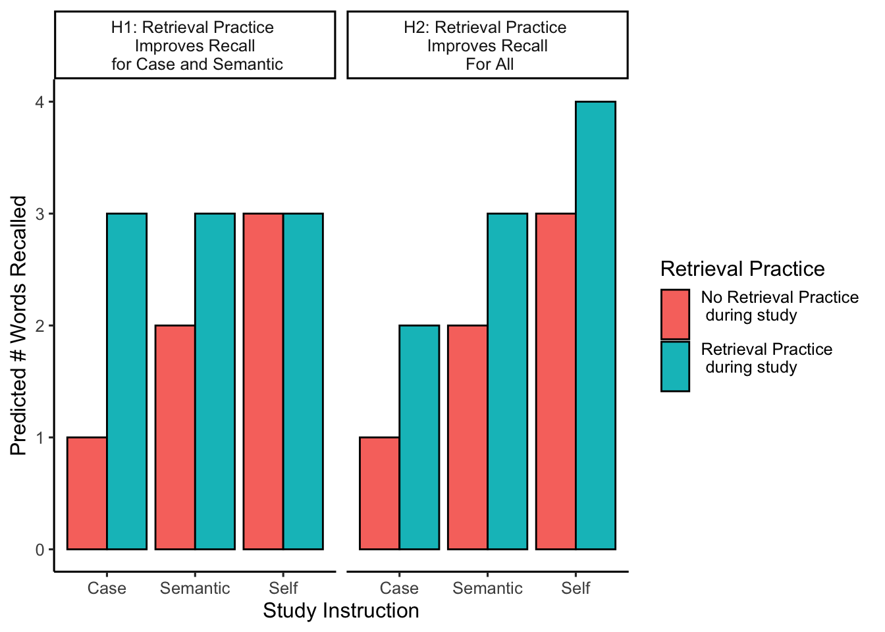

# Seed for random number generation
set.seed(42)
knitr::opts_chunk$set(cache.extra = knitr::rand_seed,
warning = FALSE,
echo = FALSE,
message= FALSE,
error = TRUE)Is The Self Reference Effect a Retrieval Practice Phenomenon?
Abstract
In levels of processing framework, Craik and Tulving (1975)’s experiments results demonstrated that subjects recalled more of the words which were encoded under the semantic tasks than other encoding conditons as semantic tasks require elaborate analysis of stimulus than judging the size of it.In 1977, Rogers et al. conducted an experiment in which self-reference effect was found to have led to superior recall. Subsequent research on underlying mechanisms of SRE have led to inconclusion. The present study takes a different perspective at why SRE promotes learning and proposes that the SRE effect emerges as a retrieval practice phenomenon as self is frequently engaged to recall information. We hypothesized that if participants pratice recall of the words during study, there will be no difference between the self and other conditions. Our second hypothesis stated that retrieval pratice will only enahnce the existing differences in each conditon. The results revealed that practicing recall does not help produce more words at the end and there was no self reference effect observed in no-recall condition. We infer that if there had been more delay in time, retrieval pratice would have led to superior retention of the stimuli. It is also possible that our sample size was too small and that participants did not follow instructions. Future research will focus on conductitng the experiment on Brooklyn College students.
Keywords
Self Reference Effect, Retrieval
Memory performance can be enhanced by mnemonic devices that help learners retain information for later recall. A few effective devices include the method of loci, acronyms, and alphabetic cuing. The method of loci involves associating an arbitrary list of to-be-remembered items with the spatial layout or locations of a familiar place. For example, in the case of memorizing a grocery list of items, one could imagine walking through rooms in their house and mentally place each item on the grocery list in different rooms. When later at the grocery store, the list of items can be recalled by mentally simulating walking through the rooms, each of which would act as an effective retrieval cue for a grocery item.. Acronyms are a device that involve arranging the first letters of a list of to-be-remembered words to form a new memorable word. For example, each letter in “ROY G. BIV” is used to refer to the colors on the visible spectrum. (Nelson & Archer, 1972). Similarly, alphabetic cueing is a device that may help people recover from momentary memory lapses, like tip-of-the tongue, where a person knows a word or name, but is unable to recall it. Alphabetic cuing involves systematically asking whether the word begins with “a”, or “b”, and so on. The process of considering each letter one at a time systematically varies the retrieval cue, and can lead to successful recall. This thesis examines theoretical accounts of a mnemonic device called the self-reference effect that has been forwarded as a particularly powerful memory aid.
The self reference effect
All of the above mnemonic devices provide support for a very general memory principle: making information meaningful makes it more memorable (Bransford & Johnson, 1972). The self-reference effect provides an example of this principle that may directly tap a deep source of meaning for individuals. Simply put, prior research on the self-reference effect suggests that the act of relating an item to oneself makes the item more memorable. This finding is consistent with theories suggesting that the self is a complex and dynamic process that gives meaning to new experiences by relating them to past experiences (Markus). So, the act of considering something in relation to the self may therefore imbue the object or thought with multiple layers of meaning leading to an enhancement in memorability.
Prior research has found a robust self-reference effect however explanations of the phenomenon have been inconclusive. Most prior research assumes that the effect of self-reference strengthens a memory trace while it is encoded. The purpose of this thesis is to propose and examine an alternative explanation for the self-reference effect that suggests a role for memory retrieval processes.
Evidence for the self-reference effect
The phenomenon of the well-replicated self-reference effect wasobserved by Rogers et al. (1977). Their experiments were intended to further evaluate Craik and Lockhart’s’s (X) levels of processing principle to determine whether relating information to oneself could promote deeper processing and enhance memorability. Previous results supporting the levels of processing principle had shown that memory for words depended on “depth” of processing during encoding. For example, Craik & Tulving (1975) showed participants words for a later memory test, but systematically varied how the words were encoded using a word judgment task. Some judgments were about physical (letter size) or acoustic (rhyming) properties of the words, and others were about category membership or whether the word would fit meaningfully in a sentence. Memory performance improved for words that were given deeper levels of encoding (e.g., category and sentence judgments) compared to more shallow levels of encoding (e.g., physical and acoustic judgments). Broadly speaking, Craik & Tulving demonstrated that encoding words in a more than less meaningful way improved memory for those words.
Rogers et al. () extended Craik & Tulving’s design to test whether deeper levels of processing could be achieved using a self-reference judgment task. The laboratory experiment included 40 personality trait adjectives which were presented on a computer screen one at a time along with a cue, in the form of a question, asking participants to make a judgment about the adjective. There were four judgment tasks: structural, phonemic, semantic, and self-reference. In the structural task, participants judged whether the physical size of the letters was the same size as the cue question. In the phonemic task, participants judged whether the adjective rhymed with another word in the cue question. In the semantic task, participants judged whether the adjective had the same meaning as another word in the cue question. Last, in the self-reference task, participants judged whether the adjective described themselves or not. Each cue question was followed by a 500-ms interval and then the target adjective was presented.. Participants were instructed to respond “yes” or “no” by pressing a button.After the encoding phase, participants were asked to recall as many words as possible.
Rogers et al. found evidence consistent with the levels of processing principle. The number of words recalled was the least for the structural condition, slightly more in the rhyming condition, more yet in the semantic condition, and the most in the self-reference condition. Furthermore, there was a significant difference between the self-reference and semantic conditions, suggesting that the self-reference manipulation caused a deeper level of more meaningful processing than the already effective semantic condition.
Participants gave the same ‘yes’ or ‘no’ response in all judgment tasks, and another finding was that recall memory was better for ‘yes’ than ‘no’ response words. This finding suggests that the self-reference effect is enhanced when subjects agreed that the adjective did describe themselves. The basic pattern of results was also replicated in a second experiment using a modifying design involving a rating scale rather than a yes/no judgment.
Replicating the self-reference effect
Subsequent variations of Roger’s et al study th provide evidence that self-reference may be a superior encoding device. A meta-analysis on the Self-Reference Effect aimed to present their literature review of SRE which focused on conditions in which the self-reference occurs which distinguishes it from semantic processing and other-person references. Other person reference is a task in SR paradigm in which the participant judges whether the trait adjective applies to the familiar person. It can be a familiar celebrity or a highly intimate person such as one’s mother. To be consistent in their analysis, they only included studies which followed the standard Depth of Processing paradigm in which there is an encoding question followed by a stimulus. Some of the characteristics of these 129 studies were that they used 39 participants on average, undergraduates being the majority of the participant population. The studies used within-subjects 75% of times and used between subjects design 25% of the times. These studies also primarily used free call in their designs and trait adjectives.
The effect size of 0.45 supported their hypothesis that SRE did promote greater recall than other person reference or semantic tasks. Although SRE was smaller when the other person was intimate such as the person’s mother, yet SR still performed better across the studies.
The Self-reference paradigm experiments have mostly been conducted in laboratories in which the majority of the participants were undergraduates and the average sample size of a study was 39. In order to promote the accessibility of the self-referential paradigm Bently et al replicated the 1977’s standard self-reference effect as an online experiment through Amazon Mechanical Turk (MTurk). They expected the online version would allow the researchers to study larger sample sizes and not just be limited to undergrad populations. There were four versions/variations of the standard self-reference experiment. Study 1 was a direct replication of Rogers et al self-reference experiment with the exception that participants could proceed to the next question on their own and not wait for five seconds for each question. There was also a filler task at the end of the encoding phase before the recall. Conservative analysis of the results showed that there was not a significant difference in mean recall of words between SR and semantic tasks. It was inferred that participants did not spend more time during encoding. Study 2 tested this inference and instead each question was set to be present for five seconds. The longer duration of stimulus resulted in participants engaging deeply with stimulus as the conservative analyses showed were more self-referent words recalled than the words in semantic tasks. Study 3 in addition to the standard self reference paradigm tested the effect of recognition and free recall on memory recall. Results showed that in recognition condition, self reference effect was diminished as there was no significant difference between semantic and self reference. The study 4 tested if the recall of the trait adjectives across the encoding tasks is affected by prior knowledge of the recall. There was no significant difference between incidental and informed recall conditions.
Extensions and applications of the self-reference effect
Self reference may be a useful mnemonic device in educational settings to promote meaningful learning. For example, children in primary school were able to retain a list of words better when they used themselves as subjects in relation to the to-be-remembered words in sentences. Spelling accuracy was also judged to be higher in self-reference conditions than other-referent conditions ( turk et al 2015).
People may engage in self-referential processing even without an explicit instruction to link a current stimulus with the self. Turk et al 2008 included an incidental condition in which the participants were only instructed to respond if the stimuli was placed above or below the cue. The referent cue was either the image or name of the participant or an image or name of a well known celebrity. The findings showed participants remembered adjectives associated with themselves more than the other in the incidental condition. (Turk et al 2008). Bower et al observed that there was also no difference in recall in the self-reference condition between adjective traits and event description task . Participants were able to recall an incident from their autobiographical memory when they were asked if an adjective noun phrase (e.g. broken bone) referred to a personal experience. . However, other experiments have deviated from the usage of adjectives only and they have instead tried to demonstrate the use of self-reference in everyday life. In one study, for example, participants were instructed to retain as much as information about profiles of unknown people. They were then instructed to recall as much as information they could remember about the profiles. Results showed that the subjects correctly remembered birthdays of the unknown people that were in the same month as their own birthday. (kesebit, 2008).
Neuroimaging techniques such as fMri have also been utilized to investigate and locate the neural correlates of the self. The medial prefrontal cortex along with other brain regions including anterior cingulate were found to be activated during the self-reference trials during the experiment t. (Macrae, 2004). The activity of medial prefrontal cortex was found to have been active during encoding and for the remembered words which suggests its role in memory formation. (macrae, 2004). A meta-analysis of self- referential processing in the brain reveals that cortical midline structures which also include medial prefrontal cortex were found to be active during self related tasks during a number of domains such as verbal, spatial and emotional domains. (Northoff, 2006).
Since the initial observance of the phenomenon of the self-reference effect, it has been considerably demonstrated in the following studies to have produced superior recall than semantic and other encoding tasks.The literature review has shown that SRE can reliably improve recall in subjects over other encoding tasks such as semantic tasks. In fact, the meta-analysis across the self-reference effect literature has also shown that despite the increase in memory load (the amount of information to be remembered), SR proved to be comparatively more efficient than semantic encoding in some study designs, (seymons,). As yet, the self-reference effect has been found in a variety of manipulations of the standard self-reference paradigm; however, the underlying mechanisms which facilitate this cognitive process have not been well understood.
Theoretical explanations of the self-reference effect
What makes relating information to yourself more memorable? This section describes major theoretical explanations of the self-reference effect. First, theories that focus on encoding processes are reviewed, followed by theories that focus on retrieval processes. The section concludes with a novel retrieval focused theory that sets the stage for the experiments presented in the thesis.
Encoding focused theories of the SRE
As previously mentioned, the Rogers et al. study was an attempt to replicate and extend Craik and Tulving (1975) empirical work providing evidence for the levels of processing principle (Craik & Lockhart, 1972). The levels of processing principle is the very general idea that memorability is influenced by depth of processing during encoding. Specifically, deeper processing during encoding yields better memory performance. For example, in the Craik and Tulving experiments, participants were presumed to encode words in the semantic conditions more deeply than words in the physical attribute or rhyming conditions. Similarly, . in the self-reference effect, relating information to oneself may cause an even deeper level of processing than the Craik & Tulving ‘semantics’ condition. On this view, the self-reference effect occurs because relating information to oneself strengthens the memory trace through a deep level of meaningful processing. The strengthened trace is less vulnerable to decay and more available for later recall.
Organizational encoding processes have also been forwarded as an explanation of the self-reference effect. Klein and Khilstrom () posited that self reference promotes categorical organization as the participants organize the words into two categories during the encoding phase: words that describe them and words that do not describe them. The act of categorizing words during encoding was assumed to provide additional cues that would facilitate later recall. They provided support for this idea by showing no difference in recall when semantics and self-reference were both equated to promote active categorization of list words. (klein and khilstrom).
Nevertheless, it can not be argued that organization is solely responsible for self-referential processing since non-depressed subjects remembered more non-depressed content than mildly depressed subjects who remembered both non-depressed and depressed content in a study (kuiper,1981). These findings support a role for elaboration processes in the self-reference effect. For example, mildly depressed subjects remembered more depressed adjectives than non-depressed subjects. This finding is consistent with the idea that depressed adjectives were recalled more because they were compatible with the self-schema of the depressed individuals leaving an elaborate trace for recall (kuiper, 1981). Therefore, it is possible that both, elaborative and organizational processes contribute to great recall of self-referential information.
Klein and Loftus in 1988 found that self-reference tasks performed similar to both organizational and elaborative processes, however they were unable to infer to which degree either process contributes to the SRE. In elaborative processing, the word is encoded in reference to “item-specific” information present in the memory which leads to more than one retrieval route established for each stimulus word during encoding for later recall. Whereas in organization processing, the stimulus list words are organized in category labels in a relation to each other which are later recalled in a cluster. (KLEIN AND LOFTUS).
There have been other attempts to understand the basis for SRE, one of which was proposed by Ganellen who argues for several other mediators being responsible for the incidental encoding induced by the self-reference effect. Ganellen hypothesized that the self-referent encoding is dependent on the emotions the stimulus produces during encoding, the importance of the stimulus to the subject and its distinctiveness. However their results yielded no relation of these predictor variables to the self-reference effect in their experiment which led to the possible implication that cognitive processes underlying self-reference are distinct from judgmental or emotional processes. (ganellan, 1985). Diverging from the depth of processing paradigm, Bellezaa proposed self-schema as an organization of internal cues which then associate personal experiences with new information and these cues are then retrieved during recall; however Bellezza’s 1984’s findings surprisingly showed that participants only recalled only about half of the trait words they had associated with their personal experiences. . To conclude, the research on the processes behind the self-reference seems to be inconclusive despite it being a robust phenomenon which has been replicated in many studies.
Retrieval focused theories of the SRE
There has been more emphasis on encoding than retrieval processes in the self-reference effect. Retrieval refers to the processes that are involved in attempts to bring information from the past to mind in the current context. In general, retrieval of memory traces is facilitated when cues in the current context match well with cues from the encoding context, and retrieval is impaired when cues between the current context and a previous one mismatch. This matching rule is supported by context-dependent memory phenomena (), the encoding specificity principles, and the transfer-appropriate processing principle ().
This thesis proposes that retrieval processes may play an important role in the self-reference effect. For example, according to the matching rule, participants will have better recall when the retrieval context matches well with the encoding context. In general, studies of the self-reference effect do not manipulate retrieval conditions. Typical studies involve a free-recall phase where participants generate as many words from the study list as possible. During this phase participants are free to rely on any cues, including self-generated ones, to prompt recall. If participants were naturally biased toward thinking about themselves during the recall phase, this bias would match well with words presented in the self-reference condition, and could provide additional support for retrieving words in the self-reference condition compared to other conditions.
Retrieval processes may also be involved during the encoding phase. For example, retrieval practice is known to improve memorability more than multiple study attempts. For example, Roediger & Karpicke (2006) had participants study paragraphs about undergraduate level concepts. Some paragraphs were allowed to be studied twice, and other paragraphs were only studied once followed by a quiz about the concepts. They found that concepts that were quizzed were better remembered over the long term than concepts that were studied twice. A general interpretation of the retrieval practice effect is that remembering a piece of information is like a skill that requires specific cognitive actions. Quizzes prompts people to engage in the specific actions necessary to retrieve information, and this form of practice develops the skill necessary to retrieve the information at a later date.
A related explanation is that as the learner tries to bring the information to their mind during each test, the diagnosticity of the retrieval cues improves by the strengthening of the match between the cue and its target. (Karpicke, 2102). Proponents of elaborative encoding have argued that elaboration of the stimuli during retrieval produces mediators and additional retrieval cues which facilitate the recall during testing. However, Karpicke and Smith (2012) observed that retrieval practice is a separate mechanism which can not be attributed to elaborative encoding. In their experiment 4, there were identical twin pairs presented during learning to inhibit mediators and the repeated retrieval condition score was reported to be 99.6%. Furthermore, retrieval practice also produced higher recall than elaborative studying even when subjects were instructed to draw concept maps, which are largely associated with elaboration, at the final test. (Karpicke and Blunt, 2011).
This thesis proposes and tests the possibility that the retrieval practice may be contributing to the self-reference effect. Specifically, it is possible that the self-reference encoding condition is confounded with retrieval practice. For example, consider the subjective experience involved in a typical self-reference judgment asking participants to judge whether an adjective, such as NICE, describes themselves. Participants may begin an internal narrative asking themselves, “Am I nice?”, “Maybe, I’m nice, but I’m not that nice”, etc. This narrative involves repeatedly stating the to-be-remembered word, which provides multiple retrieval practice attempts. Participants may not engage in such a complex inner monologue for the other conditions, especially when the judgment can be made more directly. On this view, the self-reference effect could reflect an advantage for words that were given retrieval practice in the self-reference condition compared to words that were not practiced in the other conditions. The purpose of the experiments reported in this thesis is to investigate this hypothesis directly by explicitly manipulating retrieval practice across all conditions.
Experiment 1a: Pilot
The first experiment was designed to test the hypothesis that the self-reference effect may reflect a confound due to retrieval practice. The design closely resembled the first experiment from Rogers, Kuiper, and Kirker (1977). Participants were presented with trait adjectives during an encoding phase followed by free recall. During the encoding phase each word was paired with one of three judgment tasks: letter case, semantic, and self-reference. The novel manipulation was to explicitly manipulate retrieval practice during the encoding phase for half of the words. For example, half of the encoding trials were followed by a secondary n-1 recall task, where participants were instructed to recall the previous word they had judged on the immediately preceding trial.
Predictions for performance based on the major hypothesis are shown in Figure @ref(fig:predictdions).

In the no retrieval practice condition we expected to replicate the standard self-reference effect. Specifically, we expected recall rates to increase with depth encoding, such that recall would be highest in the self-reference condition, and lowest in the case-judgment condition (case < semantic < self).
In the retrieval practice condition we considered two possible outcomes. First, it is possible that participants already engage in retrieval practice (by mentally repeating the word) for words in the self-reference condition; and, that they do not engage in retrieval practice for the case or semantic judgments (which can be answered immediately without mentally repeating the word). In this case, retrieval practice may improve recall for words in the case and semantic conditions compared to the self-reference condition which may already be benefitting from retrieval practice. An outcome could be improved and potentially equivalent recall in all conditions (case = semantic = self). In other words, if the self-reference condition has superior recall rates because of retrieval practice, then we expected that delivering retrieval practice for items in the case and semantic conditions would improve recallability to the level of the self-reference condition.
Another possibility is that retrieval practice benefits recall for all words in all conditions. Here, we might expect a main effect of retrieval practice, and no interaction with the encoding question factor.
Experiment 1a is considered a pilot experiment. To foreshadow the results, the participants recruited from Amazon’s Mechanical Turk did not provide trustworthy data. The design and participant recruitment is improved upon in the remaining experiments.
Methods
Participants.
Participants were recruited from Amazon’s Mechanical Turk, but due to several issues it was unclear how many human participants were recruited. The experiment was approved by the Brooklyn College Institutional Review Board.
Materials.
A list of person-descriptive words was obtained from (chandler2018?). The list of words was filtered to exclude any words containing punctuation, and words considered derogatory and otherwise objectionable. The total stimulus set had 375 words. These words were categorized by (chandler2018?) in terms of likeableness. There were 173 high likeable words, and 202 low likeable words.
Design.
This experimental design was a 3x2x2 mixed factorial. The encoding judgment task was a within-subject factor with three levels: structural, semantic, and self-reference. Retrieval practice was also a within-subjects factor involving two leves: retrieval practice vs. no retrieval practice. Last the encoding judgment tasks were presented to participants in either a blocked or mixed design. The dependent variable was the number of words recalled.
12 unique words (6 high, and 6 low likeable) for were randomly chosen from the stimulus set for each of the three conditions (36 words in total). Four additional filler items were inserted at the beginning and end of the encoding phase. The intention was to randomly assign half of the words for each judgment task to the retrieval practice condition, and the other half to the no-retrieval practice condition. However, a mistake in the script caused the .33 of the words to be assigned to the retrieval practice condition and .67 words to the no-retrieval practice condition. This error was corrected in the following experiments.
Apparatus.
The experiment was programmed using in JavaScript and HTML using JsPsych (De Leeuw, 2015). Just Another Tool for Online Studies (JATOS) was used to host this experiment online [cite jatos]. The source code for the experiments is available from the project website.
Procedure.
Participants were recruited from Amazon’s Mechanical Turk. They completed a consent form followed by a demographics questionnaire and task instructions. The task instructions stated, “In this phase you will make judgments about words that describe personality characteristics or traits. Sometimes you will be asked to remember words that were just shown to you. There are 44 words to judge. After this phase you will be given a memory test for all of the words you saw. Press any key to begin.”
Following the instructions, participants completed the encoding phase. On each trial a cue question indicating the word judgment task was presented on screen for 3000 ms. There were three possible cue questions: “Is the following word written in upper case?”, “Does the following word have a positive meaning?”, and “Would you use the following word to describe yourself?”. Next, the target word appeared on screen underneath the cue question, along with two buttons to respond “yes” or “no”, all of which remained on screen until a response was made. There was an inter-trial interval of 1000 ms. For words assigned to the retrieval practice condition a recall prompt appeared prior to the next trial. The recall prompt stated, “Recall the last word, Type the last word that you judged.” Participants were shown a box with a cursor and proceeded to type their response. They pressed a button to continue to the next trial. There were a total of 44 encoding trials.
In phase 2 of the experiment, participants were instructed to recall all the words they could. Participants were shown an instruction screen stating, “Phase II instructions. In this phase you will be given a recall memory test. You made judgments about 44 words. Your task is now to recall as many words as you can by typing out each word. Press any key to begin.” Next participants were shown a screen with instructions and a text entry box. The instructions read, “Recall each word. You were shown 44 words, try to recall as many words as possible. Type each word separated by a space. Your responses will be shown in the box below.”
Participants pressed a button to continue when they could not recall additional words. At this time, a second free recall phase began asking participants to try one more time to recall any additional words. The experiment ended after the final recall phase.
Data-Exclusion.
Our experiment was conducted online and it was completed by participants on their web browsers. Although there were specific instructions at the beginning of the experiment, there was a possibility that participants completed and submitted the experiment without following the instructions. Thus, we set criteria for excluding those participants whose responses indicated that they did not follow the instructions to complete the tasks. During the study phase, part one of the experiment, participants were instructed to click on either, “Yes” or “No” button. There were three conditions: structural, semantics and self. In the structural condition, the questions asked if the word displayed on screen was in uppercase or lowercase. We judged the response to the questions in this condition to be the baseline for our criteria as this condition served as the participant’s ability to attend to instructions. We excluded participants who scored lower than 70% on structural judgement questions. A total of 16 participants were excluded. We also checked for response bias as to make sure that the participants were not randomly choosing the Yes or No option as their responses to the question.
Results and Discussion
The data analysis suggested that many of the participants may not have been completing the study as intended. First, a large proportion of participants were scored at or near chance on the letter size judgment task. Second, recall rates were very low overall, and several participants typed nonsense responses. Third, the response patterns suggested that some number of participants were completing the experiment multiple times under different user names. The data collected for the pilot study also revealed an error in the program which did not assign an equal number of trials to the retrieval practice and no-retrieval practice conditions. For these reasons, the data for the pilot study are not reported.
There are several known issues with recruiting participants from Amazon’s Mechanical Turk (see ), and these are given additional consideration in the general discussion. The pilot experiment recruited participants with minimal filtering. The next experiment addressed these issues.
Experiment 1b and 1c
Experiment 1b and 1c were the same as the pilot experiment with the following exceptions. Experiment 1b recruited participants from Amazon’s Mechanical Turk using different filters than the pilot experiment. Experiment 1c recruited participants from the Brooklyn College undergraduate community. Additionally, for both experiments the experiment script was fixed such that there were an equal number of retrieval practice and no-retrieval practice trials within each encoding condition.
In addition, experiment 1b and 1c included further instructions that participants should not use memory aids such as writing down words during the experiment. And, the experiment concluded with a series of debriefing questions.
Methods
Participants.
Materials.
The same materials as described in the pilot experiment were used in experiment 1b and 1c.
Design.
The same 3x2x2 mixed factorial design as described in the pilot experiment was used in experiments 1b and 1c.
Apparatus.
The apparatus was the same as the pilot experiment.
Procedure.
The procedure was the same as before with the following differences.
The instructions given during the encoding phase further specified that, “Important. There is a memory test after this phase. Please do not use external aids to help your performance. For example, please do not write down the words or take screenshots. The experiment is aimed at measuring unaided memory processes. Press any key to begin.”
At the end of the experiment participants were presented with the following debriefing statement and questions: “Thanks for participating, we are planning on running similar experiments in the future, and we are interested in your feedback. Did you use any external memory aids like writing down the words or taking screenshots? Thanks for letting us know. Were you able to give this task your full attention, or did you get interrupted? Thanks for letting us know. Did you run into issues with the task, or other issues that might have impacted your performance?”
Data-Exclusion.
We used the same exclusion procedure as described previously. X participants were removed from experiment 1b and X participants were removed from experiment 1c.
We used R (Version 4.3.1; R Core Team 2022) and the R-packages data.table (Version 1.14.8; Dowle and Srinivasan 2022), dplyr (Version 1.1.2; Wickham et al. 2023), forcats (Version 1.0.0; Wickham 2023), ggplot2 (Version 3.4.2; Wickham 2016), jsonlite (Version 1.8.7; Ooms 2014), lubridate (Version 1.9.2; Grolemund and Wickham 2011), papaja (Version 0.1.1; Aust and Barth 2022), purrr (Version 1.0.1; Wickham and Henry 2023), readr (Version 2.1.4; Wickham, Hester, and Bryan 2023), stringr (Version 1.5.0; Wickham 2022), tibble (Version 3.2.1; Müller and Wickham 2022), tidyr (Version 1.3.0; Wickham, Vaughan, and Girlich 2023), tidyverse (Version 2.0.0; Wickham et al. 2019), tinylabels (Version 0.2.3; Barth 2022), and xtable (Version 1.8.4; Dahl et al. 2019) for all our analyses.
Results
Experiment 1b: Amazon Mechanical Turk Master’s
Post-hoc power analysis
The results from Experiment 1b were used to conduct a simulation-based post-hoc power analysis. The purpose of the power analysis was to estimate the smallest effect size of interest that the design was capable of detecting.
Experiment 1c: Brooklyn College SONA
Discussion
General Discussion
Conclusion
References
Aust, Frederik, and Marius Barth. 2022. papaja: Prepare Reproducible APA Journal Articles with R Markdown. https://github.com/crsh/papaja.
Barth, Marius. 2022. tinylabels: Lightweight Variable Labels. https://cran.r-project.org/package=tinylabels.
Dahl, David B., David Scott, Charles Roosen, Arni Magnusson, and Jonathan Swinton. 2019. Xtable: Export Tables to LaTeX or HTML. https://CRAN.R-project.org/package=xtable.
Dowle, Matt, and Arun Srinivasan. 2022. Data.table: Extension of ‘Data.frame‘. https://CRAN.R-project.org/package=data.table.
Grolemund, Garrett, and Hadley Wickham. 2011. “Dates and Times Made Easy with lubridate.” Journal of Statistical Software 40 (3): 1–25. https://www.jstatsoft.org/v40/i03/.
Müller, Kirill, and Hadley Wickham. 2022. Tibble: Simple Data Frames. https://CRAN.R-project.org/package=tibble.
Ooms, Jeroen. 2014. “The Jsonlite Package: A Practical and Consistent Mapping Between JSON Data and r Objects.” arXiv:1403.2805 [Stat.CO]. https://arxiv.org/abs/1403.2805.
R Core Team. 2022. R: A Language and Environment for Statistical Computing. Vienna, Austria: R Foundation for Statistical Computing. https://www.R-project.org/.
Rogers, Timothy B., Nicholas A. Kuiper, and William S. Kirker. 1977. “Self-Reference and the Encoding of Personal Information.” Journal of Personality and Social Psychology 35 (9): 677. https://doi.org/10.1037/0022-3514.35.9.677.
Wickham, Hadley. 2016. Ggplot2: Elegant Graphics for Data Analysis. Springer-Verlag New York. https://ggplot2.tidyverse.org.
———. 2022. Stringr: Simple, Consistent Wrappers for Common String Operations. https://CRAN.R-project.org/package=stringr.
———. 2023. Forcats: Tools for Working with Categorical Variables (Factors). https://CRAN.R-project.org/package=forcats.
Wickham, Hadley, Mara Averick, Jennifer Bryan, Winston Chang, Lucy D’Agostino McGowan, Romain François, Garrett Grolemund, et al. 2019. “Welcome to the tidyverse.” Journal of Open Source Software 4 (43): 1686. https://doi.org/10.21105/joss.01686.
Wickham, Hadley, Romain François, Lionel Henry, Kirill Müller, and Davis Vaughan. 2023. Dplyr: A Grammar of Data Manipulation. https://CRAN.R-project.org/package=dplyr.
Wickham, Hadley, and Lionel Henry. 2023. Purrr: Functional Programming Tools. https://CRAN.R-project.org/package=purrr.
Wickham, Hadley, Jim Hester, and Jennifer Bryan. 2023. Readr: Read Rectangular Text Data. https://CRAN.R-project.org/package=readr.
Wickham, Hadley, Davis Vaughan, and Maximilian Girlich. 2023. Tidyr: Tidy Messy Data. https://CRAN.R-project.org/package=tidyr.